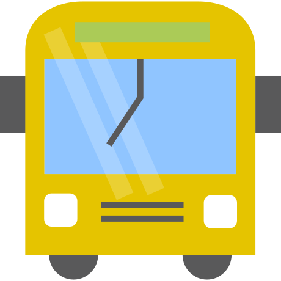

{% extends 'layout/base.html' %}
{% set pageTitle = 'Incentro Feed' %}

{% block bodyContent %}
<aside class="app-sidebar">
	<h3 class="app-sidebar__title">Incentro Feed</h3>
	<span></span>
	

	<div class="feedblock feedblock__intro">
		<span class="icon"></span>
		<h4>incentro Rotterdam</h4>
		<h6>21-7-2017</h6>
		<span class="title">Welkom incentronaut!</span>
	</div>
	<div class="feedblock feedblock__content">
		<span class="icon"></span>
		<h4>Het weer</h4>
		<span>Hier komt nu een stukje over het weer asdfasdfoiasdgnk;awef</span>
	</div>
	<div class="feedblock feedblock__content">
		<span class="icon"></span>
		<h4>Regionaal nieuws</h4>
		<span>Hier komt het regionale nieuws</span>
	</div>
	<div class="feedblock feedblock__content">
		<span class="icon"></span>
		<h4>Openbaar vervoer</h4>
		<span>Hier komt nu een stukje over het openbaar vervoer</span>
	</div>
	<div class="feedblock feedblock__content">
		<span class="icon"></span>
		<h4>Routebeschrijving</h4>
		<span>Met de auto in de file? Check het hier.</span>
	</div>
	<div class="feedblock feedblock__content">
		<span class="icon"></span>
		<h4>Sightseeing</h4>
		<span>Hier komt nu een stukje over bezienswaardigheden</span>
	</div>

</aside>

<div class="app-maps"></div>
{% endblock %}
